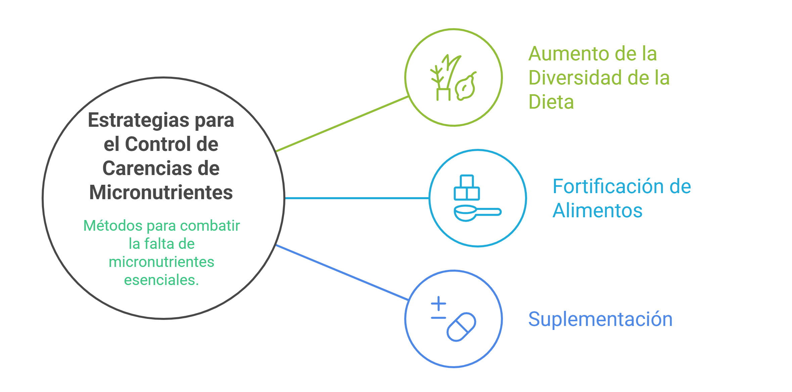
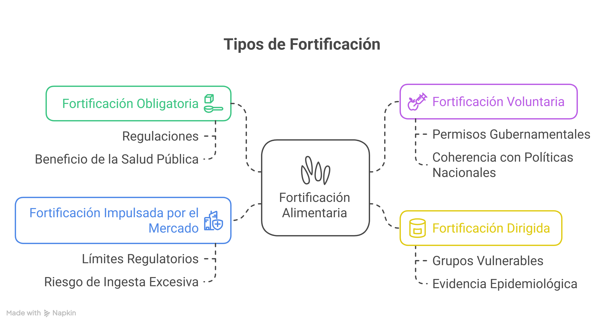
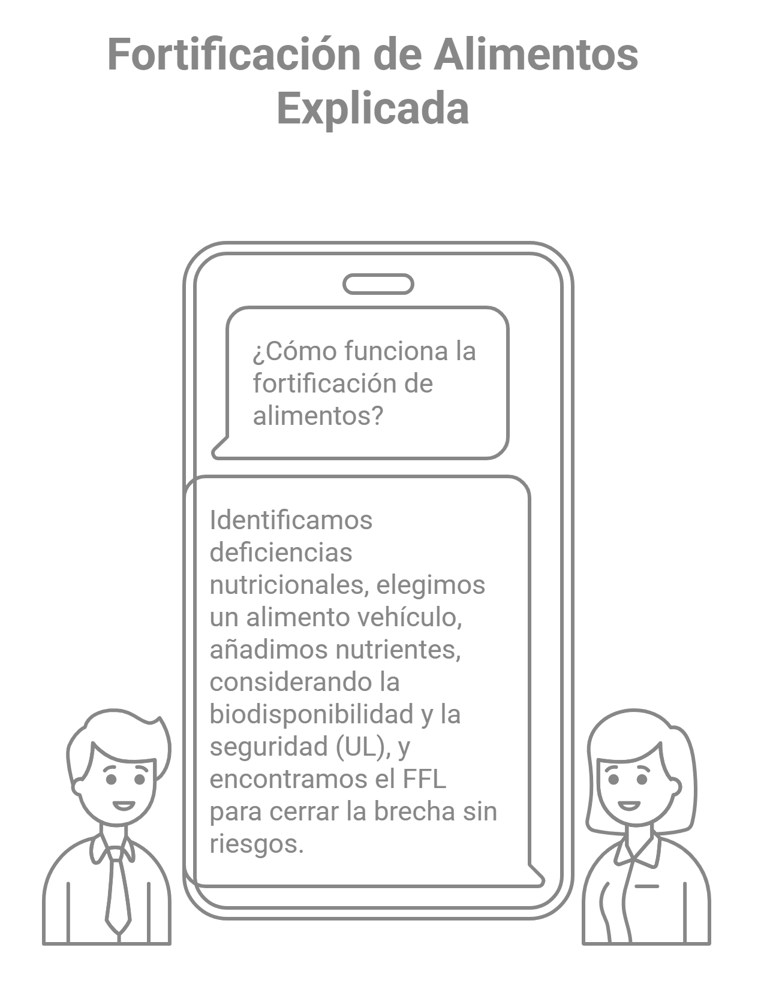

Módulo 01
¿Porque fortificar?: Generalidades sobre déficit nutricionales y estrategias para su control
A continuación, pueden ver la presentación del módulo en formato vídeo sobre el tema propuesto.
El módulo puede ser descargado desde aquí
Sumario
Generalidades sobre déficit nutricionales y estrategias para su control:
Deficiencias nutricionales y grupos vulnerables.
Políticas y estrategias para el control de las carencias de micronutrientes.
Política y estrategia de fortificación de alimentos para prevenir deficiencias de micronutrientes a nivel poblacional.
Déficit nutricionales
Los micronutrientes esenciales son compuestos orgánicos (vitaminas) e inorgánicos (minerales y oligoelementos) que el organismo requiere en cantidades mínimas (miligramos o microgramos diarios) para garantizar funciones fisiológicas críticas, como el metabolismo energético, la síntesis de ADN, el desarrollo cognitivo y la regulación inmunológica. Su característica definitoria es que el cuerpo humano no puede biosintetizarlos en absoluto, o no en cantidades suficientes para satisfacer sus necesidades vitales, por lo que deben obtenerse obligatoriamente a través de la dieta o suplementación controlada.
Cuando esto no ocurre pueden generarse deficits nutricionales que pueden afectar la salud. En America Latina y el Caribe se estima que cerca del 63% de las mujeres en edad fértil y el 48% de los niños sufren de anemia por deficiencia de hierro , además de otras carencias de micronutrientes(Stevens 2022). En Cuba por ejemplo, las carencias nutricionales más frecuentes son el déficit de vitamina A y de Yodo.
Sin embargo, se pueden llevar a cabo estrategias para corregir estas deficiencias.
Estrategias para el control de las carencias de micronutrientes
Las estrategias para el control de las carencias de micronutrientes más importantes son:
- Aumento de la diversidad de la dieta
- Fortificación de alimentos
- Suplementación

Políticas de fortificación de alimentos
La fortificación de alimentos es la práctica de incrementar deliberadamente el contenido de uno o más micronutrientes esenciales, de manera que mejore la calidad nutricional del suministro alimentario y proporcione un beneficio de salud pública con un riesgo mínimo.
Cuando la fortificación es parte de una política pública y adopta un marco normativo, se convierte en una práctica obligatoria para la adición de micronutrientes esenciales a los alimentos de consumo masivo. Esto permite mejorar su calidad nutricional y lograr beneficios para la salud (Allen et al. 2017).
Existen varios tipos de enfoques de fortificación:

Programas de fortificación de alimentos a gran escala

Dicho de otra manera:
La fortificación de alimentos es como un puente nutricional diseñado para conectar a una población con los nutrientes que le faltan. El proceso comienza identificando la deficiencia a través de la evaluación de la Ingesta de Alimentos (Dieta y Consumo), comparando lo que la gente come con sus requerimientos nutricionales. Esto nos permite calcular el Requerimiento Promedio Estimado (RPE), que sirve para estimar la proporción de personas con una ingesta insuficiente. Una vez que se identifica la brecha, se elige un alimento “vehículo” de consumo masivo para añadirle el nutriente. La cantidad que se añade es el Nivel de Fortificación (FL). Sin embargo, no se puede añadir cualquier cantidad: hay que considerar la biodisponibilidad del nutriente (cuánto puede el cuerpo realmente absorber) y, lo más importante, la seguridad. Para ello, se establece el Nivel Máximo Tolerable (UL), que es el límite de ingesta segura. El objetivo es encontrar el equilibrio perfecto, el Nivel Factible de Fortificación (FFL), que es el punto ideal donde el nivel de fortificación es lo suficientemente alto para cerrar la brecha nutricional en la mayor parte de la población, pero sin que ninguna persona, ni siquiera la que más consume el alimento fortificado, supere el UL y corra riesgo. En esencia, la fortificación es un acto de equilibrio preciso entre la necesidad de corregir una deficiencia y la obligación de garantizar la inocuidad.
Conceptos clave
En la fortificación de alimentos, muchos cálculos no tienen una única fórmula. En su lugar, se utilizan modelos complejos y análisis estadísticos para llegar a los valores deseados. Sin embargo, aquí te presento algunas fórmulas y relaciones matemáticas importantes que fundamentan estos conceptos, usando variables para ilustrar cómo se relacionan.
Requerimiento Promedio Estimado (RPE)
El Requerimiento Promedio Estimado (RPE), o EAR por sus siglas en inglés, no tiene una fórmula de cálculo directo universal, ya que es un valor estadístico que se establece a partir de datos de ingesta y metabolismo de un nutriente en una población. Es el valor que satisface las necesidades de la mitad de los individuos sanos en un grupo específico. Sin embargo, matemáticamente se utiliza para calcular el porcentaje de la población con deficiencia nutricional:
\(Porcentaje\ de\ Deficiencia\ = P(X < RPE)\)
Donde X es la ingesta de un nutriente de un individuo en la población y P es la probabilidad de que esa ingesta sea menor que el RPE.
Nivel de Fortificación (FL)
El Nivel de Fortificación (FL) es la concentración de un nutriente que se añade a un alimento. Se determina mediante una fórmula que relaciona el promedio de ingesta del alimento vehículo, la biodisponibilidad del nutriente y el objetivo nutricional.
\(FL = \frac{Objetivo\ Nutricional}{Ingesta\ diaria\ promedio\ del\ alimento \times Biodisponibilidad}\)
El Objetivo Nutricional se refiere a la cantidad de nutriente que se desea que la población reciba a través del alimento fortificado.
Nivel Máximo Tolerable (UL) y Nivel Factible de Fortificación (FFL)
El Nivel Máximo Tolerable (UL) no se calcula con una fórmula matemática simple, sino que es un valor de referencia toxicológico establecido por organizaciones científicas. Es el nivel máximo de ingesta que no presenta riesgo de efectos adversos para la mayoría de la población.
El Nivel Factible de Fortificación (FFL) está directamente ligado al UL. Es el nivel de fortificación que equilibra la eficacia con la seguridad. Un método para calcularlo es iterar diferentes niveles de FL para encontrar el valor más alto que no cause que la ingesta total de los grandes consumidores del alimento supere el UL. Esto se expresa como una condición de seguridad:
\[ Ingesta\ total\ del\ nutriente = (Ingesta\ del\ nutriente\ sin\ fortificar) + (FL \times Ingesta) \]
La condición para el FFL es que:
\[ Ingesta\ total\ del\ nutriente < UL \]
para los consumidores en el percentil 95 o 99 del alimento fortificado.
Porcentaje de Adecuación de la Ingesta
Esta es una fórmula fundamental para evaluar el estado nutricional de un individuo o de una población. Se expresa como un porcentaje:
\[ Porcentaje\ de\ Adecuación = \frac{Ingesta\ de\ Nutriente}{Requerimiento\ de\ Nutriente} \times 100\% \]
Un valor de 100% indica que la ingesta del nutriente es exactamente igual al requerimiento, mientras que valores por debajo de 100% indican deficiencia y por encima de 100% indican un consumo adecuado o, potencialmente, excesivo.
Próximos pasos
Un programa de fortificación de alimentos es una intervención de salud pública orientada a mejorar el estado nutricional de la población mediante la adición controlada de micronutrientes esenciales como hierro, yodo, vitamina A y ácido fólico a alimentos de consumo masivo. Cuando está bien diseñado, el programa de fortificación puede ser eficaz, seguro y costoefectivo para reducir las deficiencias nutricionales.
En el módulo 02 nos adentraremos en detalles en la Planificación y diseño de un programa de fortificación así como como la definición y establecimiento de los objetivos de este tipo de programas.
Puede realizar los ejercicio de este módulo en el siguiente enlace: